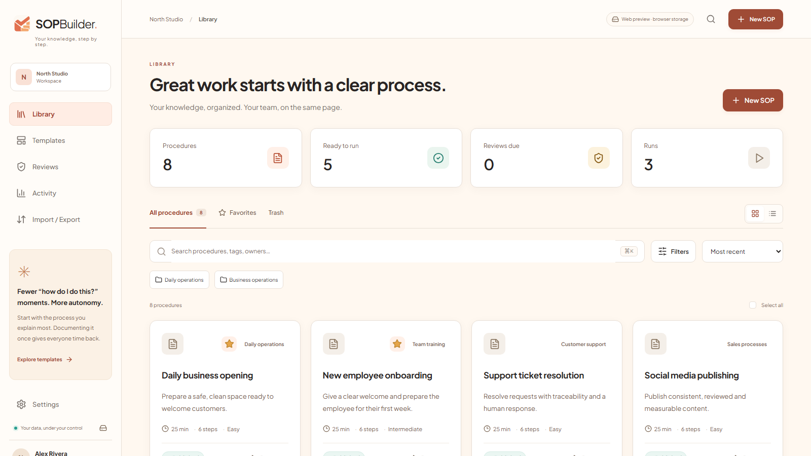
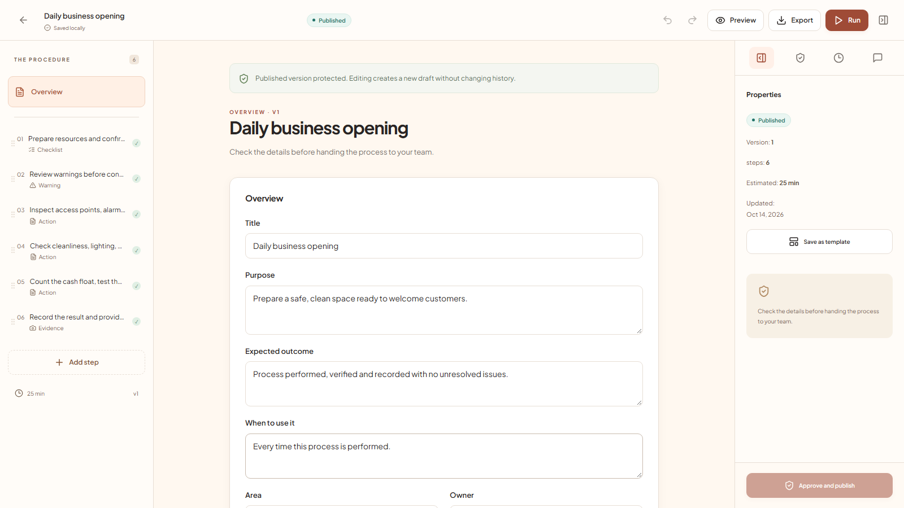
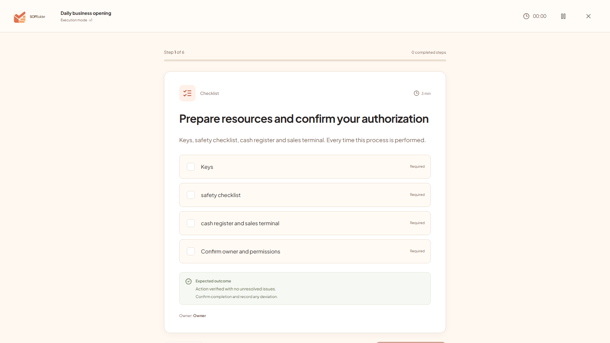
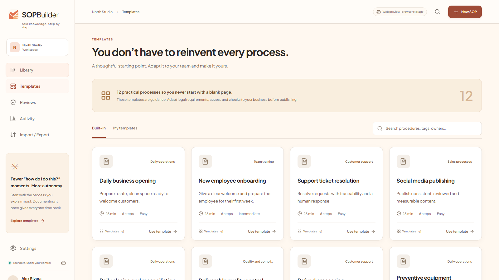
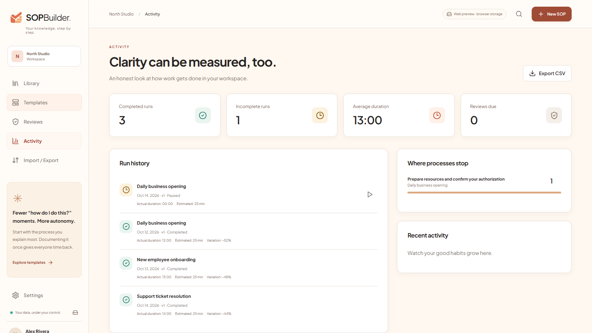

Start with something useful
Start from scratch or adapt one of 18 templates. Add instructions, owners, time estimates and criteria for a job done well.
Less guesswork. More clarity.
Turn your business knowledge into procedures you can follow, check and improve. A desktop workspace, with your data on your computer.
Windows 10/11 · Local data · Five languages · Version 0.3.1

Real SOPBuilder interface with example procedures. No customer data.
A process from start to finish
For independent professionals, small businesses and operations leads who need to stop explaining everything from scratch.
Start from scratch or adapt one of 18 templates. Add instructions, owners, time estimates and criteria for a job done well.
Required checklists, yes/no routes, timers and evidence. Pause and resume a run without losing the context.
Publish versions, review changes and compare timings. Every run keeps a copy of the procedure it followed.
Export PDF, DOCX, Markdown, HTML, JSON or packages with attachments. HTML is a standalone read-only file, not a hosted portal.
Use your own AI provider or a local model with Ollama. Remote AI requires your own key and balance; review each draft before saving.
Transcribe audio locally with Whisper.cpp after downloading the engine and a model. Review the transcript: accuracy depends on the audio and computer.
Your knowledge, your computer
Procedures and attachments are stored on your computer. The licensing website does not receive your SOPs. AI and Drive integrations are optional and need your authorization.
How we handle your data ↗Inside SOPBuilder
Screenshots from the real app, with examples prepared to show how it works. Select an image to enlarge.




One license, your workspace
A personal license for one Windows user. No commercial cap on procedures: capacity depends on your computer and available storage.
AppSumo proposal pending approval. There is no live offer and this website does not accept payments. We do not claim to be an approved AppSumo partner.
Windows x64 · Installer and portable · Executables are not Authenticode-signed: Windows may show SmartScreen.
One code · One user · No code stacking
A valid license is required to use the distributed edition. Remote AI and third-party services are not included. Separate future editions are not promised.
Read the license termsBefore you start
Initial redemption requires internet. After importing a signed license, local features work offline; a connected startup checks whether the license has been revoked.
64-bit Windows 10 and 11. Interface and templates in Spanish, English, Portuguese, French and German; there is no official macOS or Linux edition.
The integration features are included, but remote AI needs your own account, key and balance. Ollama needs installation and a compatible local model.
No: this is a local workspace for one user, without real-time editing or cloud roles. You can share exports; comments and reviews are local.
The local SQLite database is not encrypted: app locking does not prevent access to Windows files. Password-protected backups use AES-256-GCM; Drive sync does not add end-to-end encryption.
Export PDF, DOCX, Markdown, HTML, JSON and packages with attachments, and restore encrypted backups. Keep your backup password: we cannot recover it.
The proposal covers personal use and updates to included features, not external services or separate future editions. If approved, AppSumo refunds are handled through AppSumo under the offer's window (usually 60 days), and refunded licenses are revoked.
Email familiazv2016@gmail.com with your Windows version and a description of the problem. Do not publish codes, licenses, passwords or confidential content; no guaranteed response time is currently promised.
Built with intention
SOPBuilder is developed by Francisco Guzmán in Santiago, Chile. The project aims to turn repeated explanations into clear procedures that can be checked in practice.
Version 0.3.1 is an initial functional release. The focus is local: control what is saved, what is exported and when outside services are involved. Known limits are documented, not hidden.
We're on the other side
Read the guide or contact the developer. Describe the issue without sharing confidential business information.